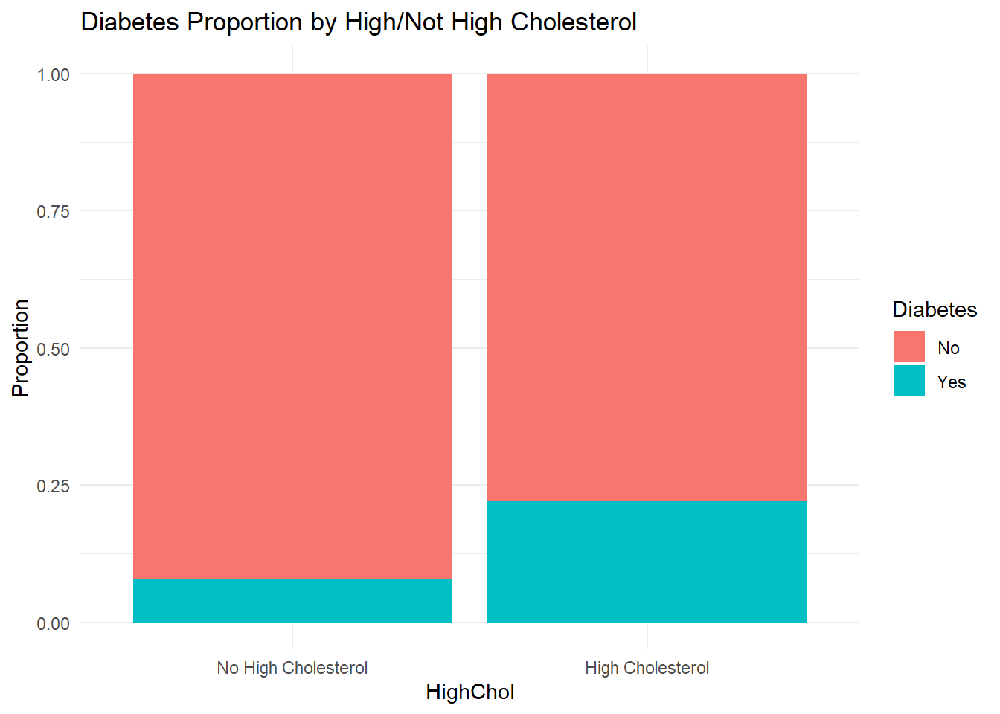
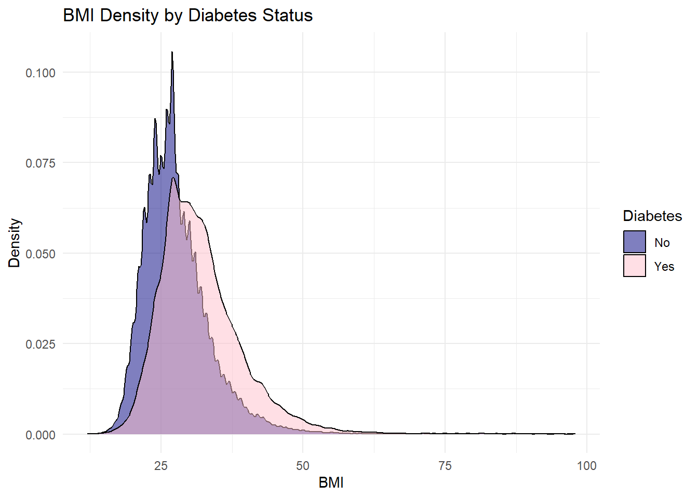
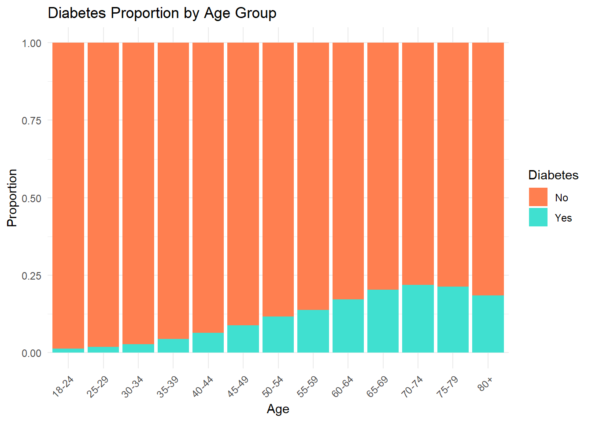

The Diabetes Health Indicators Data set has 253,680 survey responses to the CDC’s BRFSS2015 (Behavioral Risk Factor Surveillance System 2015). The primary response variable is “Diabetes_binary” which is in two classes: 0 for no diabetes and 1 for prediabetes/diabetes. Additionally, this data set has 21 variables.
For the purpose of this EDA and modeling, we will limit the analysis to explore 3 predictor variables in addition to our response variable of “Diabetes_binary”. These include:
HighChol: Adults who have been told they have high cholesterol. A class variable with 0 for no high cholesterol and 1 for high cholesterol.
BMI: Body Mass Index ranging from 12 to 98 with an average of 28.4.
Age: A 13-level age category where 1 = 18-24 all the way up to 13 = 80 and older and in between each level is in five year increments. The average age group is 55-59.
The first two were selected because of prior known relationships to them and diabetes. Age was selected because it would be interesting to know if it truly does have a relationship with the presence of diabetes.
Overall, the purpose of this EDA is to explore the chosen variables by summarizing them, looking at relationships, and evaluate different models to see their effectiveness in predicting prediabetes/diabetes or no diabetes.
Data
For the following section we are going to read in our data, convert the variables to factors if needed, and do any necessary data checks.
## packageslibrary(tidyverse)## read in the datadiabetes_data <-read.csv("diabetes_binary_health_indicators_BRFSS2015.csv")## data typestr(diabetes_data)
## check for missing valuesany(is.na(diabetes_data))
[1] FALSE
From this output we can see that we have a data frame with 253,680 observations of 22 variables. The output of “FALSE” tells us that there are no missing variables. We will now select only our variables of interest and convert them to factors when needed.
Now we will explore summary statistics in the form of tables and plots for our chosen variables. We will look at each variable independently (univariate), and then we will look at each relationship between the explanatory variable and the response (bivariate).
Diabetes
First we will look at our response variable, diabetes, by itself. Below we find the proportion of the data has prediabetes/diabetes and the proportion that doesn’t.
diabetes_eda |>count(Diabetes) |>mutate(prop = n /sum(n))
Diabetes n prop
1 No 218334 0.860667
2 Yes 35346 0.139333
It is interesting to see that 86% of the survey responses indicated that they don’t have diabetes/prediabetes. This is a large imbalance and something that will have to be taken into consideration when selecting the most appropriate model.
Cholesterol
Next we will look at cholesterol by itself and also it’s relationship with diabetes.
## univariatediabetes_eda |>count(HighChol) |>mutate(prop = n /sum(n))
HighChol n prop
1 No High Cholesterol 146089 0.5758791
2 High Cholesterol 107591 0.4241209
## bivariatediabetes_eda |>ggplot(aes(x = HighChol, fill = Diabetes)) +geom_bar(position ="fill") +labs(title ="Diabetes Proportion by High/Not High Cholesterol", y ="Proportion", fill ="Diabetes") +theme_minimal()

Looking at cholesterol by itself shows that the survey responses are more evenly split with slightly more of the responses not having high cholesterol. However, when you breakdown cholesterol by diabetes status, we again see that there is a disproportion. Regardless of high cholesterol or not, more subjects do not have diabetes. Although, it is important to note that there is a higher proportion of diabetes when the subject also has high cholesterol.
BMI
The below summarizes BMI. The first table and graph summarize BMI by itself. We can see that BMI ranges from 12 to 98 and the mean BMI is just above 28. Additionally, the BMI is right-shewed meaning that most data points fall to the left and that the mean is higher than the median.
The second table and plot look at the relationship between BMI and Diabetes. They both tell us that subjects with diabetes tend to have a higher BMI but they have the same range of BMIs. Also, grouping BMI by diabetes makes the distributions of BMI more normal than BMI by itself.
Min. 1st Qu. Median Mean 3rd Qu. Max.
12.00 24.00 27.00 28.38 31.00 98.00
## histogramggplot(diabetes_eda, aes(x = BMI)) +geom_histogram(binwidth =1, fill ="darkgreen", color ="white") +labs(title ="Distribution of BMI", x ="BMI", y ="Count") +theme_minimal()
ggplot(diabetes_eda, aes(x = BMI, fill = Diabetes)) +geom_density(alpha =0.5) +labs(title ="BMI Density by Diabetes Status", x ="BMI", y ="Density") +scale_fill_manual(values =c("No"="navy", "Yes"="pink")) +theme_minimal()

Age
As a reminder, age is a 13-level age category where 1 = 18-24 all the way up to 13 = 80 and older and in between each level is in five year increments.Summary statistics shows that there are more reponses in the higher age groups (50 and older) and the lowest number of responses came from the 18-24 age group.
## univariatediabetes_eda |>count(Age) |>mutate(prop = n /sum(n))
## bivariatediabetes_eda |>ggplot(aes(x = Age, fill = Diabetes)) +geom_bar(position ="fill") +labs(title ="Diabetes Proportion by Age Group", y ="Proportion", fill ="Diabetes") +scale_fill_manual(values =c("No"="coral", "Yes"="turquoise"))+theme_minimal() +theme(axis.text.x =element_text(angle =45, hjust =1))

The bar plot shows the proportion of subjects with and without diabetes for all of the age groups. We observe that younger age groups have very low proportions of diabetes. As age increases, the proportion of those with diabetes also increases. 70-74 has the highest proportion of individuals with diabetes.
Conclusion
After looking at these three variables, we do see some relationships between diabetes and our three explanatory variables. We will next explore some predict models in the next modeling steps.